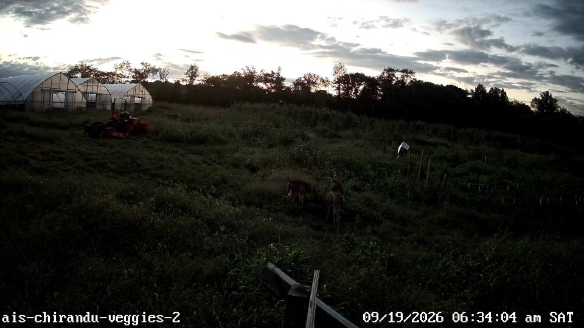
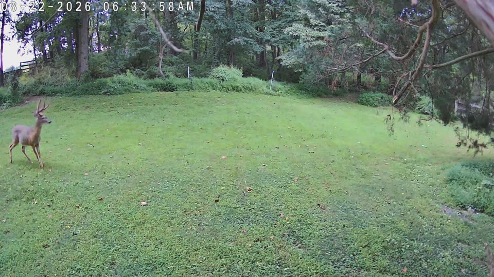
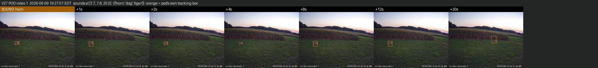

What our cameras saw at each farm. Pick a farm to see its report: every finding was checked by eye, and the original HD videos play right on the page.

1 deer visit in five weeks, in the vegetable field at dawn. Foxes on 21 of 35 nights.
Open report →
10 deer visits in three and a half days, at dawn and dusk: a doe with a spotted fawn, a buck in velvet, a group of three.
Open report →
31 deer visits; 22 had a deterrent sound. The deer clearly ran in only 2 of them and stayed through it in 7.
Open report →